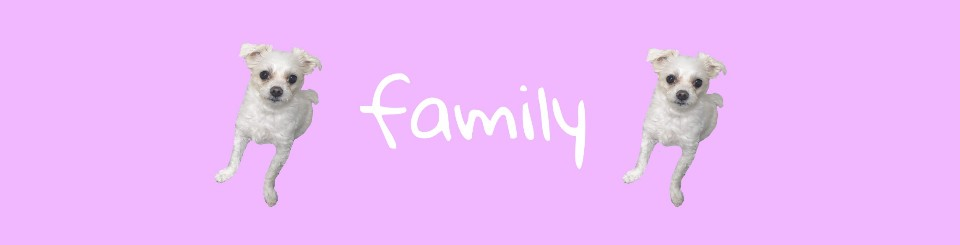

원래 얌마는 언니가 기르던 강아지였는데 언니가 이사를 가게 되면서 얌마를 데려갈 수 없어서 그때부터 우리 가족이 키우게 되었습니다.그리고 얌마는 애견샵에서 데려왔는데 언니가 얌마를 데리고 온이유는 강
아지 중에서 가장 못생겨서 버림을 받을 까봐 데려왔다고 합니다. 처음에는 엄마가 마음에 들어 하지 않으셔서 곁에 있는 것도 싫어하셨고 아파도 언니보고 신경쓰라고 하셨습니다. 하지만 시간이 지나고 그 누구
보다 얌마를 사랑하셔서 얌마만의 보양식과 전기장판, 유모차, 드라이기, 집 등등을 구매하십니다. 또한 조금만 아파도 걱정을 하셔서 병원에 데리고 가면 막상 과식일 경우가 많습니다. 그래서 얌마는 지금 행복하
게 우리가족의 구성원이 되어 살고 있습니다.